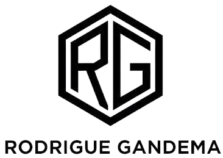

Rodrigue S. Gandema
Stagiaire Maintenance et Support IT
Autodidacte. De la maintenance PC au code — web, mobile, et des petits jeux pour le plaisir (Tic-80, Löve2D).
Biographie
Après un bac littéraire, j'ai commencé la Communication Digitale à l'université, avant de comprendre que ma voie était ailleurs. Je me suis alors tourné vers un profil plus technique : une formation en installation et dépannage de climatiseurs, avec un stage à la clé. C'est dans une période de pause forcée que j'ai renoué avec une passion plus ancienne, le code, sans pour autant lâcher le goût du terrain technique et de la maintenance.
Aujourd'hui, mon profil se construit autour de deux axes : le développement en autodidacte — web, Python, C, Android — et le support / maintenance informatique, un domaine où j'ai déjà de l'expérience concrète et où je continue à postuler activement.
Basé à Abidjan, je cherche ma place dans la tech, entre code et technique.
Certfis (NetAcad Cisco)
Curieux de voir ce que j'ai validé jusqu'ici ? Mes certifications sont réunies sur mon profil Credly.
Voir mes certifications